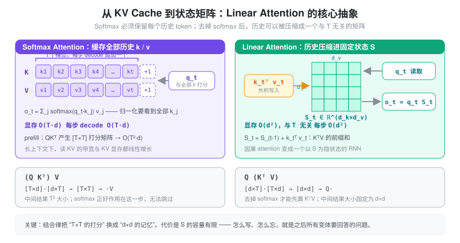
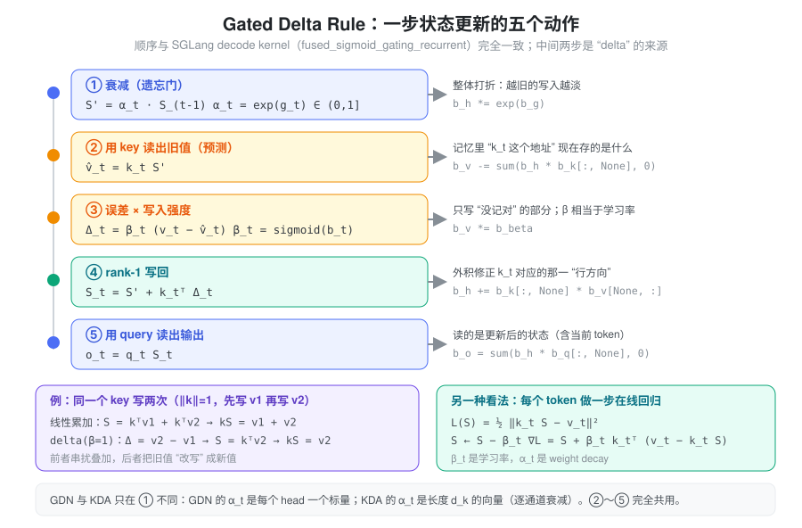
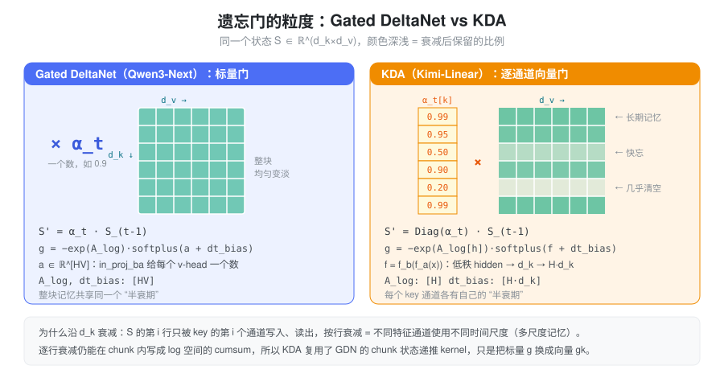
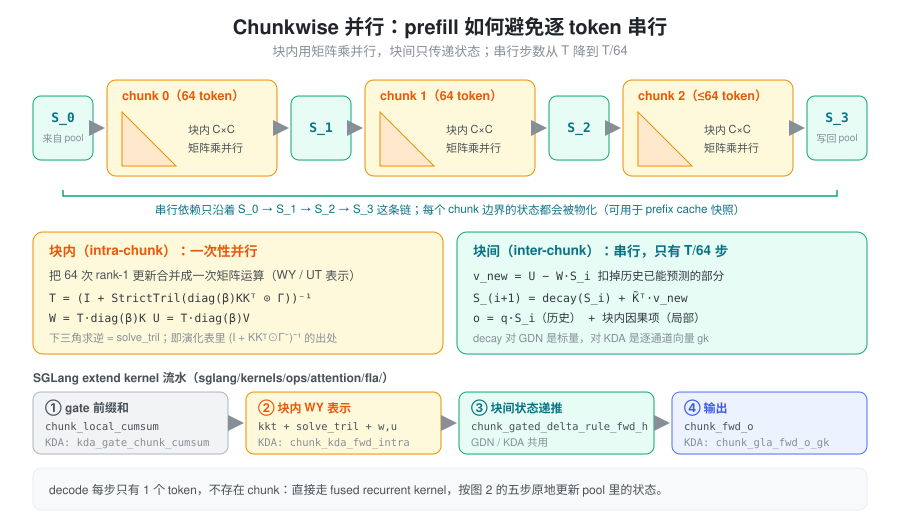
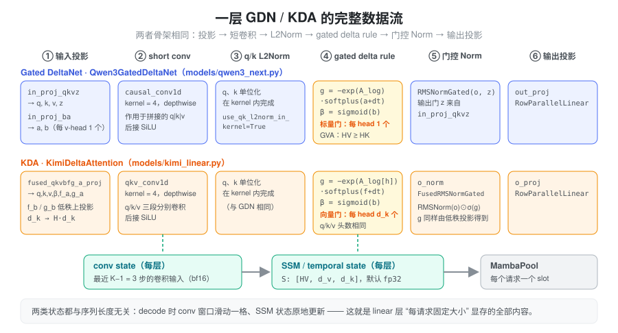
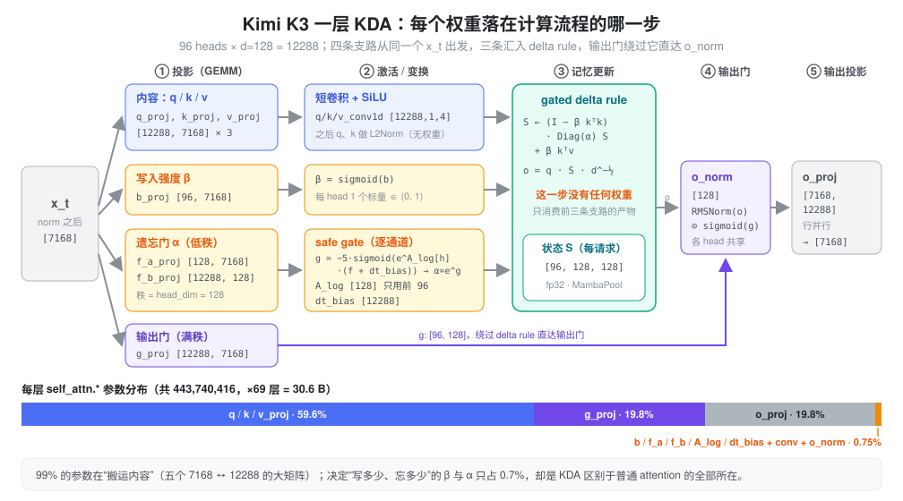
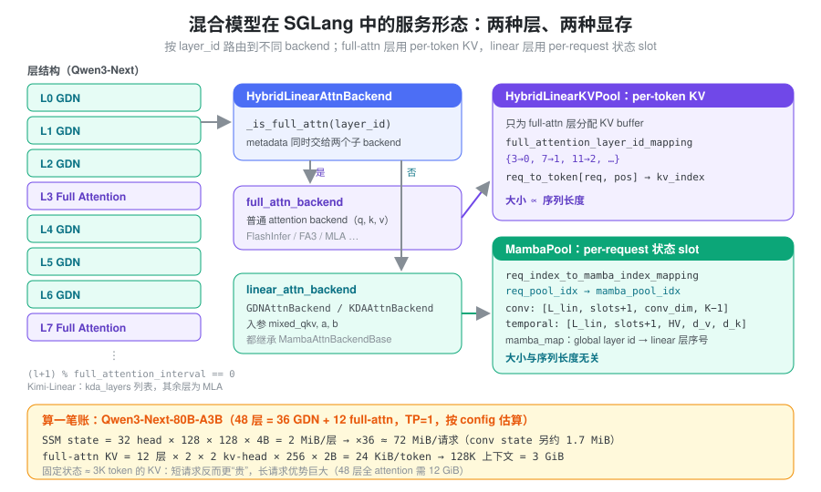

问题：Softmax Attention 的两笔账
\boldsymbol{S} = \frac{\boldsymbol{Q} \boldsymbol{K}^\top}{\sqrt{d}} \in \mathbb{R}^{n \times n}, \qquad \boldsymbol{A} = \mathrm{softmax}(\boldsymbol{S}), \qquad \boldsymbol{O} = \boldsymbol{A} \boldsymbol{V} \in \mathbb{R}^{n \times d}
推理时，softmax attention 有两笔账都随序列长度 T 增长：
- 计算：prefill 时 QK^\top 产生 [B, H, T, T] 的打分矩阵，计算量 BT^2HD。
- 显存与带宽：decode 每生成一个 token，都要把完整的 KV cache 读一遍；KV 大小 \propto T。上下文到 128K 时，读 KV 的带宽和 KV 显存往往比 MLP 更贵。
根源在 softmax 的归一化：o_t 依赖 q_t 与所有 k_j 的打分之和，任何一个历史 token 都不能提前丢掉。Linear attention 的出发点是：如果能把历史压缩成一个与 T 无关的东西，这两笔账就都不存在了。
核心抽象：把历史压缩成一个状态矩阵
结合律
去掉 softmax 后，矩阵乘法可以按结合律重排：(QK^\top)V = Q(K^\top V)。
考虑完整的 MHA，Q, K, V 的 shape 都是 [B, T, H, D]。计算 K^\top V 时，B, H 是 batch 维，D 是自由维，T 是被收缩掉的维度。结果的 shape 为 [B, H, D, D]，计算量 BTHD^2：复杂度里的 T^2 变成了 D^2。
递归形式：Attention 变成 RNN
下文统一用行向量约定：q_t, k_t \in \mathbb{R}^{1\times d_k}，v_t \in \mathbb{R}^{1\times d_v}，状态 S \in \mathbb{R}^{d_k \times d_v}。因果版本的输出为
o_t=\sum_{j=1}^{t} (q_t k_j^\top)\, v_j = q_t \sum_{j=1}^{t} k_j^\top v_j = q_t S_t, \qquad S_t = S_{t-1} + k_t^\top v_t
S_t 就是 K^\top V 的前缀和。因果 attention 于是变成一个以 S_t 为隐状态的 RNN：每步写入一个外积、读出一次矩阵乘，状态大小恒为 d_k \times d_v。

把 S 看成联想记忆
S 是一个 key→value 的线性联想存储：写入是外积 k^\top v，读取是用 key 去乘 S。如果写入过的 key 两两正交且单位长，k_i S = v_i 可以精确读回。
问题也在这里：d_k 维空间最多容纳 d_k 个正交 key，token 数远超 d_k 后写入必然互相串扰。而且纯累加让所有历史等权叠加，没有任何机制去忘掉过时的信息，或改写同一个 key 下的旧值。
所以 linear attention 真正要回答的问题是：容量固定的记忆，应该怎么写、怎么忘。 下面所有变体都是对这个问题的不同回答。
演化：从累加到 Gated Delta Rule
统一递归形式
\boxed{ \begin{aligned} \hat{v}_t &= k_t \,(\gamma_t S_{t-1}) &&\text{（先衰减，再用当前 key 读出旧值）}\\ \Delta_t &= v_t - \hat{v}_t &&\text{（真实值与记忆预测值的误差）}\\ S_t &= \gamma_t S_{t-1} + \alpha_t \, k_t^\top v_t + \beta_t \, k_t^\top \Delta_t &&\text{（统一状态更新）}\\ o_t &= q_t \, S_t &&\text{（用 query 读出输出）} \end{aligned} }
- \gamma_t：遗忘门，写入前对旧状态打折；
- \alpha_t：直接写入系数，把 k^\top v 原样加进记忆；
- \beta_t：误差写入系数，只把“没记对的部分”写回去，相当于写入强度 / 学习率。
| 模型/方法 | \gamma_t | \alpha_t | \beta_t | 退化后的更新 |
|---|---|---|---|---|
| 最早的线性 Attention | 1 | 1 | 0 | S_t = S_{t-1} + k_t^\top v_t（纯累加） |
| 加入遗忘门（RetNet / GLA / Mamba2 一类） | \gamma_t | 1 | 0 | S_t = \gamma_t S_{t-1} + k_t^\top v_t（带衰减的累加） |
| DeltaNet | 1 | 0 | \beta_t | S_t = S_{t-1} + \beta_t k_t^\top (v_t - k_t S_{t-1})（误差驱动） |
| Gated DeltaNet | \gamma_t | 0 | \beta_t | S_t = \gamma_t S_{t-1} + \beta_t k_t^\top (v_t - k_t\, \gamma_t S_{t-1})（遗忘 + 误差驱动） |
注意 Gated DeltaNet 的预测值 \hat v_t
用的是衰减之后的状态——SGLang kernel
里也是先 h *= exp(g)，再
v -= h·k。
为什么 delta rule 更好
两个角度理解：
- 改写而不是叠加：同一个 key 先写 v_1 再写 v_2，纯累加读出 v_1+v_2；delta rule（\beta=1）第二次只写入误差 v_2-v_1，读出的正是 v_2。
- 在线回归：对损失 \mathcal{L}(S)=\tfrac12\lVert k_t S - v_t\rVert^2 做一步梯度下降，S \leftarrow S - \beta_t \nabla \mathcal{L} = S + \beta_t k_t^\top (v_t - k_t S)，正好是 delta rule。每个 token 都对记忆做一次 SGD，\beta_t 是学习率，\gamma_t 是 weight decay。

矩阵（并行）形式
把递归在整段序列上展开，可以得到等价的矩阵形式（M 是因果 mask，M^- 是严格下三角 mask，\Gamma 是累积衰减 mask；为简洁省略 \beta，可视作并入 k, v）：
| 模型/方法 | 矩阵形式 |
|---|---|
| Softmax Attention | (\exp(QK^\top) \odot M)V |
| 最早的线性 Attention | (QK^\top \odot M)V |
| 加入遗忘门 | (QK^\top \odot \Gamma)V |
| DeltaNet | (QK^\top \odot M)(I + KK^\top \odot M^-)^{-1}V |
| Gated DeltaNet | (QK^\top \odot \Gamma)(I + KK^\top \odot \Gamma^-)^{-1}V |
\Gamma_{i,j} = \begin{cases} \displaystyle \prod_{\tau=j+1}^{i} \gamma_\tau, & i > j \\ 1, & i = j \\ 0, & i < j \end{cases}
那个下三角逆矩阵 (I + KK^\top \odot M^-)^{-1} 不是额外加的归一化，而是 delta rule 递归在多步展开后的闭式解：每一步的误差 \Delta_t 依赖前面所有步写入的结果，把这条依赖链解开就是一个下三角线性方程组。它的实际用途是让 prefill 可以按块并行（见下文 chunkwise 一节）。
Gated DeltaNet
Gated DeltaNet（GDN，Qwen3-Next / Qwen3.5 的 linear 层）把更新写成更紧凑的形式：
S_t = \alpha_t \left(I - \beta_t k_t^\top k_t\right) S_{t-1} + \beta_t k_t^\top v_t, \qquad \alpha_t = e^{g_t} \in (0, 1],\quad \alpha_t \text{ 是每个 head 一个标量}
展开括号：
\boxed{ S_t=\alpha_t S_{t-1} -\alpha_t\beta_t k_t^\top k_t S_{t-1} +\beta_t k_t^\top v_t }
(I - \beta_t k_t^\top k_t) 是一个“部分 Householder 变换”：只沿 k_t 方向把旧记忆收缩 \beta_t，其余方向不动。这也是 q、k 必须做 L2 归一化的原因：\lVert k_t\rVert = 1 时这个矩阵沿 k_t 方向的特征值是 1-\beta_t \in [0, 1)，递归不会发散。
门的参数化沿用 Mamba2：
g_t=-\exp(A_{\log})\cdot\operatorname{softplus}(a_t+dt_{\mathrm{bias}})
\beta_t=\operatorname{sigmoid}(b_t)
A_log、dt_bias 是每个 v-head
一个的可学习参数，a_t, b_t
由输入投影 in_proj_ba 给出（每个 v-head
各一个数）。\exp(A_{\log})
决定这个 head 的基础衰减速率，\operatorname{softplus}(a_t+dt_{\mathrm{bias}})
是数据相关的“步长”，两者相乘再取负保证 g_t \le 0。
\underbrace{S' = \alpha S_{t-1}}_{\text{遗忘}} \quad\longrightarrow\quad \underbrace{\hat v=kS'}_{\text{读取旧值}} \quad\longrightarrow\quad \underbrace{\delta=\beta(v-\hat v)}_{\text{计算修正}} \quad\longrightarrow\quad \underbrace{S_t=S'+k^\top\delta}_{\text{更新记忆}} \quad\longrightarrow\quad \underbrace{o=qS_t}_{\text{输出}}
一个与 kernel 语义一致的逐 token 参考实现：
def gated_delta_rule_ref(q, k, v, g, beta, S=None):
# q, k: [b, h, t, dk] v: [b, h, t, dv]
# g: [b, h, t]（log 空间衰减，≤ 0） beta: [b, h, t]
b, h, t, dk = k.shape
q = F.normalize(q, dim=-1) * dk ** -0.5 # 先 L2Norm 再乘 scale
k = F.normalize(k, dim=-1)
if S is None:
S = k.new_zeros(b, h, dk, v.shape[-1])
outs = []
for i in range(t):
q_i, k_i, v_i = q[:, :, i], k[:, :, i], v[:, :, i]
S = S * g[:, :, i].exp()[..., None, None] # ① 衰减
v_hat = torch.einsum("bhk,bhkv->bhv", k_i, S) # ② 预测
delta = beta[:, :, i, None] * (v_i - v_hat) # ③ 误差
S = S + torch.einsum("bhk,bhv->bhkv", k_i, delta) # ④ 写回
outs.append(torch.einsum("bhk,bhkv->bhv", q_i, S)) # ⑤ 读出
return torch.stack(outs, dim=2), SGDN 的 v-head 数可以多于 k-head 数（GVA，类似 GQA 反过来：多个 v-head 共享一组 q/k），状态按 v-head 存，形状是 [H_V, d_v, d_k]。
KDA：逐通道的遗忘门
Kimi Delta Attention（KDA，Kimi-Linear 的 linear 层）只改了一处：遗忘门从每个 head 一个标量变成每个 head 一个长度 d_k 的向量。
S_t = \left(I - \beta_t k_t^\top k_t\right) \mathrm{Diag}(\alpha_t)\, S_{t-1} + \beta_t k_t^\top v_t, \qquad \alpha_t \in (0, 1]^{d_k}
S 的第 i 行只被 key 的第 i 个通道写入和读出，所以 \mathrm{Diag}(\alpha_t)
按行衰减，等于让不同特征通道拥有不同的记忆“半衰期”：有的通道几乎永久保留，有的通道每几个
token 就清空。这是 GLA 式细粒度门控与 delta rule
的结合。上面的参考实现只需改一行：g 变成
[b, h, t, dk]，衰减写成
S * g[:, :, i].exp()[..., None]。

门的参数化与 GDN 同构，只是 f_t 变成了向量，并且由低秩投影得到以控制参数量：
f_t = W_{f_b}\,(W_{f_a}\, x_t) \in \mathbb{R}^{H \cdot d_k},\qquad g_t = -\exp(\texttt{A\_log}[h]) \cdot \mathrm{softplus}(f_t + \texttt{dt\_bias})
其中
f_a_proj: hidden → head_dim、f_b_proj: head_dim → H·head_dim；A_log
每个 head 一个，dt_bias 每个通道一个（[H \cdot d_k]）。部分模型（如
Kimi K3，config 中的 gate_lower_bound=-5）改用
“safe gate”：g =
\text{lower\_bound} \cdot
\mathrm{sigmoid}(\exp(\texttt{A\_log}) \cdot (f +
\texttt{dt\_bias}))，把衰减限制在一个有界区间内（见下文
Kimi K3 一节）。
| Gated DeltaNet | KDA | |
|---|---|---|
| 遗忘门 | 每 head 一个标量 \alpha_t | 每 head 一个 d_k 维向量 \alpha_t |
| 门的来源 | in_proj_ba 直接投影 |
f_a_proj → f_b_proj
低秩投影 |
| 头数 | v-head 可多于 k-head（GVA） | q/k/v 头数相同 |
| 输出门 | RMSNormGated(o, z)，z 来自
in_proj_qkvz |
RMSNorm(o) ⊙ sigmoid(g)，g 来自低秩
g_a_proj → g_b_proj（K3 改为满秩
g_proj） |
| 搭配的 full attention 层 | Gated Attention（GQA） | MLA |
| SGLang 模型 | Qwen3GatedDeltaNet（models/qwen3_next.py） |
KimiDeltaAttention（models/kimi_linear.py） |
代价是门张量从 [T, H]
变成 [T, H, d_k]，chunk
kernel 里的衰减也不能再当作一个标量 mask 提出来，需要把
k
按累积衰减逐通道缩放（kernel 里的
kg）。好在状态递推的结构没变，SGLang 的 KDA
prefill 直接复用了 GDN 的块间递推 kernel
chunk_gated_delta_rule_fwd_h，只是传入向量门
gk。
两种计算形态：chunkwise prefill 与 recurrent decode
逐 token 的递归在 decode 时刚好合适（每步本来就只有一个
token），但用在 prefill 上就是 T 步串行，GPU
吃不满。矩阵形式虽然完全并行，却又回到了 T^2。chunkwise
算法折中两者：把序列切成大小 C=64
的块（fla/chunk.py 中的
CHUNK_SIZE）。
- 块内：64 次 rank-1 更新用 WY / UT
表示合并成一次矩阵运算。前文矩阵形式里的下三角逆，在这里只需要对一个
64\times 64
的块求（
solve_tril）。 - 块间：只沿块边界传递状态 S_i。先用 S_i
扣掉历史已能预测的部分（
v_new = U − W·S_i），再更新到 S_{i+1}。
串行步数从 T 降到 T/64，总计算量是 O(T\,C\,d + T\,d^2)。

这个形态在 serving 上有一个副产品：每个块边界的状态 h 都会被物化出来，等于免费拿到了“前缀长度为 64 的倍数处”的状态快照，prefix cache 就是靠它来保存中间状态的（见下文）。
decode 时没有 chunk，直接调用 fused recurrent
kernel（fused_recurrent_gated_delta_rule_packed_decode
/ fused_recurrent_kda_packed_decode，或者非
packed 的
fused_sigmoid_gating_delta_rule_update）。它在一个
kernel 里完成门计算和上图五步更新，并原地改写 pool
里的状态。
一层 GDN / KDA 的完整数据流
delta rule 只是一层的核心，GDN 和 KDA 在它前后都包了一样的骨架：

有两个容易被忽略的组件：
- short conv：q/k/v 在进入 delta rule 之前，先过一个 kernel=4 的 depthwise 因果卷积再接 SiLU。linear 层没有 RoPE，这个卷积提供了局部的位置/顺序信息，同时让 key 能混合相邻 token，便于形成“归纳头”式的匹配。
- 输出门：delta rule 的输出要经过一个门控
RMSNorm。GDN 的门 z 由
in_proj_qkvz一起投影出来，KDA 的门由低秩g_a → g_b得到、用 sigmoid 激活。
结果是每个 linear 层有两份与序列长度无关的状态：conv state（最近 K-1=3 步的卷积输入）和 SSM state S。
实例：Kimi K3 的 KDA 权重如何对上计算流程
Kimi K3 权重精算 列出了一个 KDA 层的 20 个张量。光看名字和形状，很难说清哪个张量对应上面公式里的哪个符号，也看不出参数量都花在了哪里。这一节把它们逐个挂回计算流程。
K3 的 KDA 配置：96 个 head，d_k
= d_v = 128，投影宽度 96
\times 128 = 12288，短卷积核
4，use_full_rank_gate=true，gate_lower_bound=-5。
先分角色，再对形状
20 个张量里有 6
个（input_layernorm、post_attention_layernorm
以及 *_res_norm /
*_res_proj）是每层都有的公共 norm 和 Attention
Residual 权重，MLA 层也有，与 KDA 无关。剩下 14 个
self_attn.*
按它们在递推里干什么可以分成四组：
- 内容：q / k / v 是记忆的“地址”和“数据”，决定读写什么。
- 写入强度 \beta：每个 head 每个 token 一个标量，决定这一步把误差写进记忆多少。
- 遗忘门 \alpha：每个 head 每个通道一个，决定旧记忆按行保留多少。
- 输出：delta rule 读出 o 之后的门控 norm 和输出投影。
另外有几步没有任何权重：q/k 的 L2Norm、d^{-1/2} 缩放、状态递推本身。递推是纯计算，可学习的东西全在它的输入（q、k、v、β、α）和输出端。

写成公式（行向量，省略 head 下标；\hat{\cdot} 表示 L2 归一化）：
\begin{aligned} q_t, k_t, v_t &= \mathrm{SiLU}\big(\mathrm{Conv}_4(x\,W_{q,k,v}^\top)\big)_t &&\texttt{q/k/v\_proj},\ \texttt{q/k/v\_conv1d}\\ \beta_t &= \sigma(x_t W_b^\top) \in (0,1)^{96} &&\texttt{b\_proj}\\ f_t &= (x_t W_{f_a}^\top)\, W_{f_b}^\top \in \mathbb{R}^{96\times 128} &&\texttt{f\_a\_proj},\ \texttt{f\_b\_proj}\\ g_t &= -5\cdot\sigma\!\big(e^{\texttt{A\_log}[h]}\,(f_t + \texttt{dt\_bias})\big),\quad \alpha_t = e^{g_t} &&\texttt{A\_log},\ \texttt{dt\_bias}\\ S_t &= (I-\beta_t \hat k_t^\top \hat k_t)\,\mathrm{Diag}(\alpha_t)\,S_{t-1} + \beta_t \hat k_t^\top v_t &&\text{无权重}\\ o_t &= d^{-1/2}\,\hat q_t S_t &&\text{无权重}\\ y_t &= \big(\mathrm{RMSNorm}_{w}(o_t)\odot\sigma(x_t W_g^\top)\big)\,W_o^\top &&\texttt{o\_norm},\ \texttt{g\_proj},\ \texttt{o\_proj} \end{aligned}
| 权重 | 形状 / dtype | 对应操作 | 产物 |
|---|---|---|---|
q_proj /
k_proj / v_proj |
[12288, 7168]
BF16 ×3 |
x
W^\top，按 head 切成 [96, 128] |
卷积前的 q、k、v |
q_conv1d /
k_conv1d / v_conv1d |
[12288, 1, 4] F32
×3 |
每通道 4 个 tap 的因果 depthwise 卷积，后接 SiLU | 进入 delta rule 的 q、k、v |
b_proj |
[96, 7168]
BF16 |
\sigma(x W_b^\top) | \beta，每 head 一个 |
f_a_proj |
[128, 7168]
BF16 |
低秩下投影到 128 维 | 遗忘门的瓶颈表示 |
f_b_proj |
[12288, 128]
BF16 |
上投影回每 head 每通道 | 原始门 f，[96, 128] |
dt_bias |
[12288] F32 |
加到 f 上，逐通道 | 每个通道的基础门值 |
A_log |
[128] F32（只用前
96） |
e^{\texttt{A\_log}[h]} 作 sigmoid 的斜率，逐 head | 与上面一起得到 g、\alpha=e^g |
g_proj |
[12288, 7168]
BF16 |
满秩输出门，\sigma(\cdot) | 与 o 逐元素相乘的门 |
o_norm |
[128] F32 |
head 内 RMSNorm 的缩放，96 个 head 共享 | 归一化后的 o |
o_proj |
[7168, 12288]
BF16 |
拼接各 head 后投影回 hidden | 层输出
[7168] |
把这 14 项加起来是每层 443,740,416，乘 69 层正好是精算总览里的 30,618,088,704，说明没有遗漏或重复的张量。
几个从形状里读出来的细节
- 门很便宜，内容很贵。 q/k/v/g/o 五个
7168\leftrightarrow 12288
的大矩阵占 99.25% 的参数；真正决定“写多少、忘多少”的
b_proj、f_a/f_b、A_log、dt_bias合计约 319 万，只占 0.72%。遗忘门用秩 128 的低秩分解（7168\to128\to12288，约 249 万），如果做成满秩会是 8800 万。 - 门的粒度是三层叠加的。
A_log是 head 级（96 个），dt_bias是通道级（12288 个），f_t是 token × 通道级。于是每个通道的衰减 = head 的整体灵敏度 × (通道偏置 + 数据相关项)。 A_log存了 128 个，只用 96 个。 checkpoint 里它的形状是[head_dim]而不是[num_heads]；加载时_a_log_weight_loader先截取前num_heads个，再按 TP 切分，后 32 个值从未参与计算。- safe gate 给遗忘设了下限。 GDN / Kimi-Linear 的 g=-e^{A}\cdot\mathrm{softplus}(\cdot) 没有下界，一个 token 理论上能把某行记忆清零。K3 的 g = -5\cdot\sigma(\cdot) \in (-5, 0)，即 \alpha\in(e^{-5}, 1)\approx(0.0067, 1)：单步最多忘掉 99.3%，不会一步清空。这里 e^{\texttt{A\_log}} 的含义也变了，不再是“衰减速率”，而是 sigmoid 的斜率，决定门对输入有多敏感。
- K3 的输出门是满秩的。 Kimi-Linear
用低秩
g_a_proj → g_b_proj，K3 换成了一个g_proj [12288, 7168]（use_full_rank_gate），单这一项就占 KDA 参数的 19.8%，与o_proj一样大。它也是唯一绕过 delta rule 的支路：直接从 x_t 投影到o_norm。 - 精度分两档。 大矩阵是
BF16；卷积核、
A_log、dt_bias、o_norm是 F32。后几项会进入指数、sigmoid 或递推，而且参数量极小，存 F32 几乎不占空间。
在 SGLang 里的落地
模型类是
KimiK3DeltaAttention（models/kimi_k3.py），checkpoint
的张量名和运行时模块并不一一对应，load_weights
在加载时做了合并：
q_proj/k_proj/v_proj/g_proj作为 shard 0–3 合进fused_qkvg_proj，一次 GEMM 算出 4×12288 列，再 split 成qkv和输出门。q/k/v_conv1d合进qkv_conv1d（[3×12288, 1, 4]），squeeze 成[36864, 4]交给RadixLinearAttention当conv_weights。b_proj、f_a_proj不并入宽 GEMM。源码注释的理由是：把 96 + 128 这种窄输出拼进去会让输出维度变得别扭，影响 GEMM kernel 选择。加载后_merge_bfa_weights把这两个同输入的小 GEMV 合成一个[f_a | b]；在 CUDA graph 的 decode 中，它放在 side stream 上，与宽 GEMM 重叠执行。A_log、dt_bias、lower_bound随RadixLinearAttention交给KDAAttnBackend，门的激活在 kernel 内完成：prefill 时由kda_gate_chunk_cumsum把 safe gate、块内 cumsum 和 \beta 的 sigmoid 融成一个 kernel（beta_is_raw=True）；decode 时直接融进 recurrent kernel。q/k 的 L2Norm 同样在 kernel 内（use_qk_l2norm_in_kernel=True）。o_norm是FusedRMSNormGated(head_dim, activation="sigmoid")。decode / verify 时，模型把门张量交给 backend（_k3_onorm_gate），能融合的 kernel 会把门控 RMSNorm 也一起算掉。- TP 按 head 切：TP8 时每张卡 12 个 head，对应
A_log12 个、dt_bias12×128 个、b_proj12 行；f_a_proj只有 128 个输出，用ReplicatedLinear每卡一份；o_proj行并行，attention-TP 的求和不在o_proj内做（reduce_results=False），而是推迟到层边界，与 residual 相加一起融合进 all-reduce。
在 SGLang 中的实现
以下路径都相对于 python/sglang/srt/。
混合层结构
纯 linear 模型的召回能力不够，所以实际模型都是混合结构：
- Qwen3-Next：每
full_attention_interval（默认 4）层放一层 full attention，判定条件是(l+1) % full_attention_interval == 0，其余是 GDN 层，比例为 3:1。 - Kimi-Linear：config 里有一个
kda_layers列表，由is_kda_layer判定哪些层是 KDA，其余层是 MLA。
模型层只负责投影和门控，真正的 attention 计算交给
layers/radix_linear_attention.py 里的
RadixLinearAttention。它带着
layer_id、头数/维度、conv
权重、A_log、dt_bias 等信息，把
mixed_qkv, a, b 交给当前的 attention
backend。这和 full attention 层的
RadixAttention 是对称的。
状态存在哪里：两种显存

HybridLinearKVPool（mem_cache/memory_pool.py）：只为 full attention 层分配 per-token KV。full_attention_layer_id_mapping把全局 layer id 映射到紧凑的 KV buffer 下标。MambaPool：为 linear 层分配 per-request 的状态 slot，张量布局是[num_mamba_layers, size+1, *shape]。HybridReqToTokenPool用req_index_to_mamba_index_mapping把请求映射到 slot，用mamba_map把全局 layer id 映射到 linear 层序号。- 状态形状（
configs/mamba_utils.py）：- GDN（
Mamba2StateShape）：conv 为(conv_dim, K−1)，其中conv_dim = HV·d_v + 2·HK·d_k；temporal 为(HV, d_v, d_k)。 - KDA（
KimiLinearStateShape）：conv 为转置的(K−1, …)；temporal 为(H, d, d)。 - 注意 temporal 按
[V, K]存，与上文数学约定 S\in\mathbb{R}^{d_k\times d_v} 互为转置。
- GDN（
- dtype：conv 默认
bf16（
SGLANG_MAMBA_CONV_DTYPE）。SSM 默认 fp32，可由 config 的mamba_ssm_dtype或SGLANG_MAMBA_SSM_DTYPE覆盖，KDA 只读环境变量。状态被反复读写、误差会累积，所以默认不用低精度。 - 两个 pool 的比例：由
--mamba-full-memory-ratio（默认 0.9）控制。
图中的账说明了取舍：每个请求的固定状态约等于 3K token 的 KV。所以短请求在 linear 层上反而更“贵”，长上下文才是混合模型的主场。
backend 路由与两条路径
layers/attention/hybrid_linear_attn_backend.py
中的 HybridLinearAttnBackend 持有两个子
backend，用 _is_full_attn(layer_id)
按层路由：full attention 层走普通 backend（FlashInfer / FA3
/ MLA 等），linear 层走 GDNAttnBackend /
KDAAttnBackend（layers/attention/linear/，都继承
MambaAttnBackendBase）。
metadata 只在每个 batch 开始时准备一次，主要包括：
mamba_cache_indices：每个请求对应的状态 slot，由get_mamba_indices得到；query_start_loc：变长序列在拼接 batch 里的起点。
以 GDN 为例，两条路径的分工如下：
- decode：先通过
mamba2_layer_cache(layer_id)取出该层的 conv/temporal 状态，然后causal_conv1d_update把卷积窗口滑动一格，最后用 recurrent kernel 原地更新 S。 - extend：
has_initial_states = extend_prefix_lens > 0决定是否从 pool 里读入初始状态（命中 prefix cache 的请求才有）。之后依次执行causal_conv1d_fn、fused_gdn_gating，再调用 chunk kernelchunk_gated_delta_rule；KDA 对应调用chunk_kda。
kernel 抽象
具体 kernel 被再抽象一层：
layers/attention/linear/kernels/kernel_backend.py定义LinearAttnKernelBase，要求实现decode/extend，target_verify可选。- 实现有
TritonGDNKernel、TritonKDAKernel，以及 CuTe DSL、FlashInfer、FlashKDA 等变体。 GDNKernelDispatcher/KDAKernelDispatcher按阶段选择实现。- 命令行用
--linear-attn-backend，或分阶段的--linear-attn-decode-backend/--linear-attn-prefill-backend指定；verify 阶段未设置时跟随 decode。
prefix cache 与投机解码
这两个特性都会撞上同一个事实：状态是对整段前缀的压缩，不能切开。KV cache 可以按 token 截断复用；而 S_t 只对应前缀长度恰好为 t 的位置，任意截断点的状态都需要事先存下来。
- prefix cache：由
mem_cache/mamba_radix_cache.py中的MambaRadixCache负责。- radix 树节点除了 KV 索引，还挂一个状态
slot。节点被分裂时，前半段直接得到
mamba_value = None（源码注释：mamba cache can not be split）。 - 为了让更多前缀可命中，prefill 会把 chunk kernel
物化的块边界状态 h 拷进
track slot。decode 则按
--mamba-track-interval（默认 256）定期留快照。 - 命中后，状态先拷贝到请求自己的 slot（COW）再继续更新，以免污染缓存。
--enable-int8-mamba-checkpoint可以把缓存的状态存成 int8，大约省一半空间。
- radix 树节点除了 KV 索引，还挂一个状态
slot。节点被分裂时，前半段直接得到
- 投机解码：verify 时有多个 draft
token，但只有被接受的前缀才能提交状态。
target_verify以disable_state_update=True运行，把每个 draft 位置的中间状态写进SpeculativeState的 buffer。- accept 之后，由
update_mamba_state_after_mtp_verify按接受长度把对应的中间状态 scatter 回 pool。 - 另一条路是
--enable-linear-replayssm-spec（仅限 topk ≤ 1 的链式 draft）：verify 不再给每个 draft 存一份完整状态，只把每步的原始输入（k、v、gate、β）存进每个 slot 的小窗口；commit 时把被接受的前缀重放进 fp32 状态。状态 d_k\times d_v 远大于单步输入，这样省掉了大量显存和带宽。
小结
Linear attention 的核心是把 softmax attention 随长度增长的 KV cache，换成一个 d_k\times d_v 的固定状态，attention 因此变成 RNN。随之而来的问题是固定容量的记忆怎么写、怎么忘：
- delta rule 用“只写误差”实现改写，相当于每个 token 对记忆做一步在线回归；
- 遗忘门负责淘汰旧信息。GDN 用每 head 一个标量，KDA 把它细化成逐通道向量，让不同特征有不同的时间尺度。
落到 Kimi K3 的权重上，可学习参数几乎全在递推的两端：99% 是搬运内容的 q/k/v/g/o 大矩阵，决定写入与遗忘的 β、α 只占不到 1%，而递推本身没有权重。
工程上，chunkwise 算法让 prefill 能并行，recurrent kernel 让 decode 只需常数开销。SGLang 用“full attention 层 per-token KV + linear 层 per-request 状态 slot”的两种显存来服务混合模型；代价是状态不可切分，prefix cache 和投机解码都要靠显式的状态快照来补。